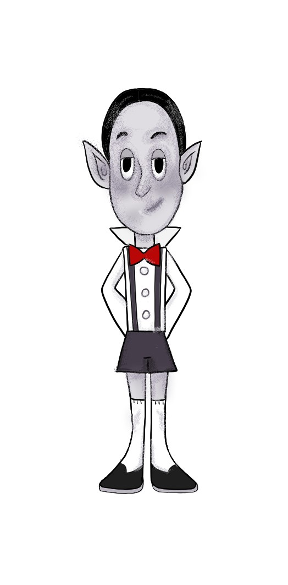
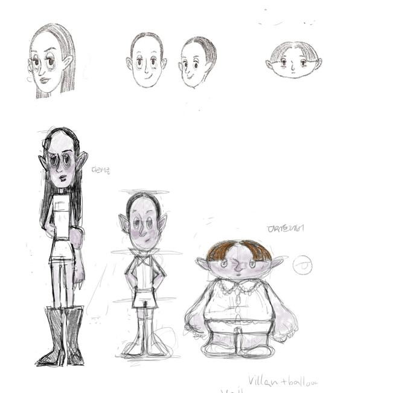
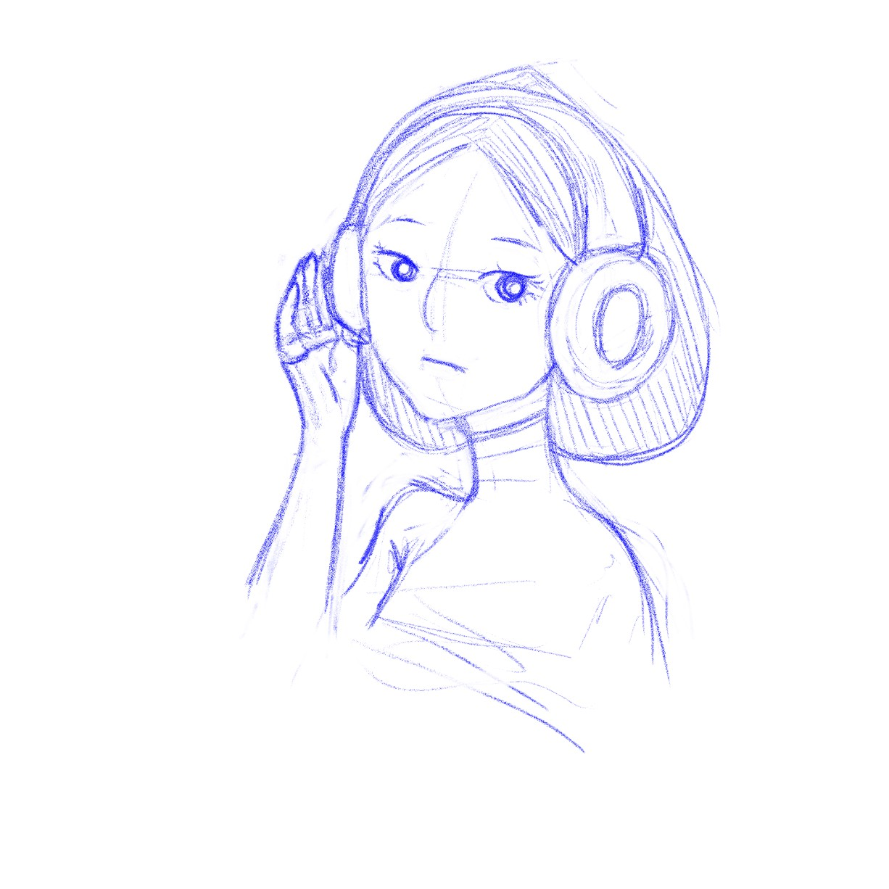

Forward
무언가를 좋아하는 마음을 솔직하게 드러내지 못하는 건 불행한 삶 아닐까? 어린 초등학생에게 <암호명: 이웃집 아이들>, <검볼>, <핀과 제이크의 어드벤쳐 타임>, <파워퍼프걸>, <벤 10> ,<피니와 퍼브>, <지미 뉴트론>, 아바타: 아앙의 전설> 등 미국 카툰 네트워크사와 니켈로디언의 애니메이션들 착한 아이, 모범생 콤플렉스에 갇혀 있던 나는 이 애니메이션을 부모님 몰래 보느라 가끔 숙제를 하지 못하기도 했지만. 그러나 멈춘지는 못했다. 누군가는 어릴 적 보던 애니메이션을 아직도 봐? 유치하다. 이걸로 어떻게 돈을 벌려 그러지? 등등의 생각을 할 수도 있겠다. 실제로 내가 내 스스로에게 했던 말들이기도 하니 말이다. 억지로 좋아하고 끌리는 마음을 거부하고, 스스로에게 솔직하지 못했다. 그러나 미대에 와서 애니메이션 영상 수업을 듣게 된 후, 내가 재미있게 할 수 있는 일들을 하는 것만으로도 큰 행복감을 느낄 수 있다는 걸 알게 된다. 내가 가장 재미있게 작업할 수 있는 애니메이션 작품 상상만으로도 나를 과거의 그 시절로 데려가는 나무집에 모여사는 캐릭터들이 벌이는 각양각색의 에피소드들로 구성된 옴니버스 애니메이션 그 기획을 담은 아트북을 제작하는데 그치려고 했다. 혼자서 학생의 신분으로 한 학기 안에 애니메이션의 여러 에피소드를 제작하는 것은 불가능하다고 생각 이 애니메이션을 소개하는 인트로 영상을 제작하기로 했다.Introduction
성경, 그리스 로마 신화 등 신화적 세계관에서, 하늘 천상에는 이 세계를 창조한 신(선)이 살고 있고 지옥에는 죽은 자들이 거주하거나 인간을 타락시키려는 악마가 있다. 그 사이 인간은 선과 악을 동시에 경험하고 행하며, 끊임없이 혼란스러워하고 변화한다. 이 신화적 세상을 집이라는 공간으로 축소시켜, 선과 악, 생명과 죽음, 천상과 지하, 위층과 아래층과 계속 함께 살아가며 변화하고, 결국은 성장해 가는 인간의 인생을 비유하고자 한다.Origins
 <이웃집 아이들>
<이웃집 아이들>
미국 카툰네트워크 애니메이션 'Gumball'은 굉장히 다양한 애니메이션 기법을 쓴다.D, 3D, 실사, 낙서체, 8비트 등등. 가끔은 다른 애니메이션 제작사에 외주를 주어 일본 애니메이션,인형 등의 기법을 사용하기도 한다. 따라서 전체적으로 콜라주 느낌이 강하다.
Character Design
요나
자연과 세상을 사랑하는 아이, 밝고 긍정적인 성격
에이든

명확함, 근거, 논리를 중시. 과학과 발명을 좋아한다.
샤론

자신을 삼촌네 집에 맡기고 간 아빠. 일찍이 철이 들고 차분함. 자기 앞가림은 스스로!

에블린

부모님의 간섭과 동생들이 귀찮은 사춘기 소녀. 인플루언서. 일탈을 즐긴다
밸런
정장으로 격식을 차린 얌전한 모범생. 악동 본능을 숨기고 사는 꼬마. 요나가 자신에게 어쩔 줄 몰라하는 것이 재밌어 장난을 친다
앨런

밸런과 쌍둥이. 누나와 동생과는 다른 자신의 모습을 고치고 싶어한다 핑크색, 디저트를 좋아하지만 집안 분위기에 드러내지 못하는 소년
수제즈

정원을 관리하고 손질하는 것이 취미 어머니와 함께 살고 있다 이 집을 짓고 사라진 자신의 아버지를 그리워한다. 아버지가 남긴 집을 지키고 싶어한다
Background design & Painting
지하와 지상 4층 구조의 수직적 빌라 하우스 층에는 각양각색의 가족들이 거주하고 있다.

Writing & Storyboarding

- 에피소드
(제목=집의 공간, 부속품들의 이름)
- 새 집
트리 하우스로 이사 온 본 패밀리. 이사 첫 날 본 패밀리의 아이들 요나, 에이든, 샤론은 위층의 수제즈와 인사하고 집을 소개받는다. 집을 둘러보던 중 지하로 난 문이 궁금한 아이들은 질문하지만 수제즈는 말을 흐린다. 요나는 지하의 문 근처에서 그곳에 사는 아이 벨런을 만난다. 수제즈와 밸런은 본 패밀리 아이들에게 자기가 집소개를 해 주겠다라고 싸운다 - 집터
이 집의 시공자, 수제즈의 아버지는 현재 이 집에서 모습을 찾을 수 없다. 홀어머니와 함께 사는 수제즈. 수제즈는 자신은 아버지가 있다고 말하며 본 패밀리의 아이들에게 아버지의 일기를 보여준다. 그러나 아이들의 반응은 각자 다르다. 에이든은 자신은 눈에 보이지 않는 건 믿지 않는다며 수제즈의 말을 믿지 않는다. 요나는 아버지와 떨어져 사는 수제즈에게 위로를 건넨다. 과연 수제즈는 진실을 말한 것일까? 수제즈의 아버지는 실제로 있을까? 아이들은 증거를 찾아 나선다 - 발코니
수제즈는 지하의 아이들에 대한 경고를 보낸다. 요나는 의문스러운 밸런이 자꾸 궁금하다. 2층 발코니에 걸터 서 생각에 잠겨있는 요나를 아래에서 밸런이 부르며 장난을 건다 - 샤론의 다락방
요나와 에이든의 삼촌이자 샤론의 아빠가 집으로 찾아왔다. 샤론은 오랜만에 만난 아빠에게 관심도 주지 않는다. 그녀의 마음은 방문처럼 굳게 닫혀있다. - 정원
정원을 관리하는 수제즈가 없는 사이 요나와 에이든이 정원을 어떻게 활용할지를 두고 고민한다. 요나는 동물들과 식물들을 키우고 싶어하고, 에이든은 자신이 발명한 기계장치를 두고 싶어한다. - 층간소음
다른 영역으로 침범
Sound & Vision
 타이틀 로고 스케치
타이틀 로고 스케치
Animation
Reference
- '검볼'
- '아담스 패밀리'
- '성경'
본인은 무교이나 평소 신화와 종교에 관심이 많아. 기획 설정의 많은 부분을 성경의 표현들에서 영감을 받았다.
수제즈의 보이지 않는 아버지와 그의 일기, 각자 다른 아이들의 반응은 God Father과 Bible, 그리고 신에 대한 다양한 인간들의 태도로 치환된다.
지하에 사는 가족들의 집의 층수는 정해져있지 않다. 부부가 정착하여 아이들을 한 명씩 낳고 가정을 꾸려가는 동안, 계속 아래를 파가며 그들의 방과 집의 크기를 늘려나갔다. 그들은 '흙을 먹는 뱀'을 이용해 땅을 파낸다. 창세기 3:14 '여호와 하나님이 뱀에게 이르시되 네가 이렇게 하였으니 네가 모든 육축과 들의 모든 짐승보다 더욱 저주를 받아 배로 다니고 종신토록 흙을 먹을지니라' 성경에서 아담에게 선악과를 먹게 한 뱀과 지하가족은 악과 죽음의 이미지를 지하가족
Onward
현재는 기획 소개와 인트로 영상을 제작하는 데에 그쳤다. 그러나 이 작업은 미래에 내가 만들어낼 옴니버스 애니메이션 'The Three Story Tree House(가제)'의 시작이다. 본인은 추후 애니메이션 스튜디오에 영화감독으로 입사하여, 이 기획을 확장시켜 세상에 내놓겠다는 꿈을 가지고 있다.대학생이 된 요나 & 밸런  대학생이 된 샤론
 대학생이 된 수제즈
대학생이 된 수제즈